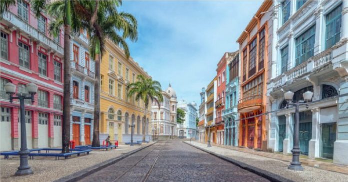

Paço Alfândega

O local já foi um convento e a alfândega do Recife, mas hoje em dia, depois de ser reformado e revitalizado, se tornou um pequeno shopping. Mas não pense que é um shopping qualquer, porque lá você vai ver uma estrutura sem igual com áreas originais reveladas, peças do ceramista Francisco Brennand e um terraço com vista panorâmica do Rio Capibaribe. Aproveite que está por lá e pegue o portão de saída para o Rio Capibaribe. Lá você vai ter o letreiro de Recife e um cenário de prédios antigos, mar, rio e pontes que revelam o verdadeiro Recife Antigo. Quem tiver mais tempo e puder passar lá novamente, a dica é ver o pôr do sol do terraço do Paço. Esse horário é bom para observar as cores da cidade mudar. Sem falar que durante a noite terá a oportunidade de ver as pontes da cidade iluminadas.
Rua do Bom Jesus
A Rua do Bom Jesus foi considerada uma das ruas mais bonitas do mundo. Além disso, ela é uma das ruas mais antigas do Recife. Por lá você vai encontrar alguns dos prédios mais importantes, portanto descubra a história do Recife Antigo a fundo. Aos domingos, a Rua do Bom Jesus ganha uma feirinha típica com artesanato local, barraquinhas de comida, artesanato e música aos fins de tarde. A feirinha é bem familiar, as crianças aproveitam para brincar e os pais vão às compras ou relaxam num bar ou restaurante. Além disso, dá para fazer um lanche e experimentar algumas das comidas típicas de Pernambuco que são deliciosas.